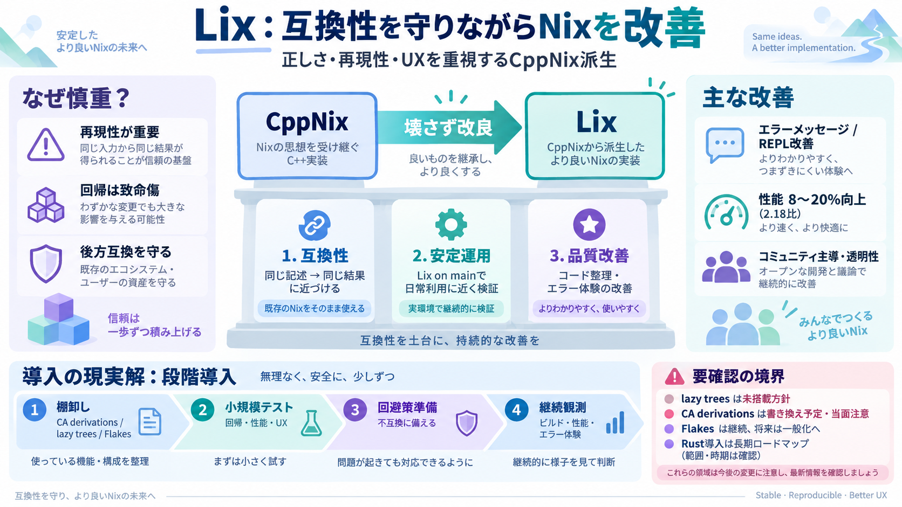

Announcing Lix 2.95 “Kakigōri” - Links - NixOS Discourse
:slight_smile: Lix and OrigNix are two projects with fundamentally different visions (both technically and socially), w…

Nixの“より良い実装”
Lixは、Nix言語（特にCppNix）の「正しさ（correctness）」を守りながら、互換性と使い勝手を両立することを目指す派生プロジェクトです。
互換性は“壊せない”
Nixは同じ記述を同じアーキテクチャ上で同じ結果に近づける設計です。実装（処理系）の変更は、挙動や境界条件に影響しやすく、回帰（regression）が致命傷になり得ます。
再現性・正しさ・予測可能性を維持
後方互換の崩れ／エラー体験の劣化
“基盤の進化”
Lixの核は「完全互換を目指す」ことです。派手な新機能より、回帰を抑えた検証と、安定化・品質改善を優先します。
designed to be fully compatible（完全互換を志向）
Lix on mainで“日常利用”に近い形でテスト
コードクリーンアップ／安定性改善中心
互換性の“守り方”
LixはCppNixのクライアントを壊す置き換えではなく、体験（UX）と実装品質を段階的に上げる方針です。とはいえ、技術差分は「全領域で完全に同じ体験」を保証しない可能性もあります。
同じ結果に近づける設計原則（正しさの優先）
lazy trees等の扱い変更があり得る
コミュニティが方向を決める
Lixはコミュニティ主導で、商業的利害に縛られにくい姿勢や、参加者が安心して開発できる安全な場づくり（モデレーション等）を重視しています。技術選択は人の意思決定にも影響されます。
利害関係の開示／透明性を重視
モデレーション・包摂性（多様性）へのコミット
CppNixからの差分
差分の例として、エラーメッセージ改善、小さな改良、そして遅延木（lazy trees）を搭載しない方針などが挙げられます。性能向上（2.18比で8〜20%）やREPL改善も明示されています。
エラーメッセージ／REPL改善
2.18比で8〜20%向上
lazy treesは含めず、代替を予定
libgit2を使わない方針
CA derivationsは？
CA derivationsは「完全に書き換える予定」ですが、現状は実用実装を提供しない方針の可能性があります。依存している構成は、移行前に影響範囲の確認が必要です。
CA derivationsを完全書き換え予定
実用実装を当面提供しない可能性
Flakesは残る
Flakesのサポートを削除する意図はないと明記されています。将来的にはFlakes特有の機能を一般化し、誰でも同等のことをできる方向へ進める目標があります。
Flakes対応は継続
Flake相当の機能を広く提供
安全性の長期ロードマップ
Rustは段階的に導入し、補完・置換を行う計画です。現時点では、具体的な時期や「どこを置き換えるか」は本文だけでは読み切れません。
メモリ安全性などの底上げ（安全性向上）
範囲・時期は追加情報が必要
“完全互換”の境界が要確認
「完全互換を目指す」と「差分」の両方が併記されており、利用者が安全に判断するには“どの機能がどの程度変わるか”が不足している点があります。特にlazy trees／CA derivations／Flakes厳格化の影響は確認が必要です。
互換性の“どこまで同じ？”
lazy trees未搭載、CAの扱い変更
どのregressionが条件付きか未詳細
導入の現実解
自分のワークフロー（Flakes/CA/lazy treesの利用有無）を棚卸しし、公式ドキュメントと既知差分・ロードマップを確認したうえで段階導入するのが安全です。最初は小規模検証→段階移行を推奨します。
依存機能の棚卸し（例：CA derivations、lazy trees相当）
小規模で回帰テスト（Lix on main含む）
不互換があれば回避策を先に用意
運用指標（ビルド/性能/エラー体験）を継続観測
参照先（例）
本文の趣旨に沿って、Lix公式発表や関連議論で追加確認できます。
:slight_smile: Lix and OrigNix are two projects with fundamentally different visions (both technically and socially), w…
Lix is a Nix implementation focused on reliability, predictability, friendliness, developed by a community of people fro…
Logo for LIX Logo for fetch Logo for Link2Sheet Logo for LeadBring lock ## LIX's Investments and acquisitions ## Repor…
Disclaimer: This article was created with the assistance of AI and reviewed by the JetBrains RustRover team. C and C++ …
[5:18] many people will think of Nixos as immutable, it's more accurate to think of it as declarative and generation-bas…